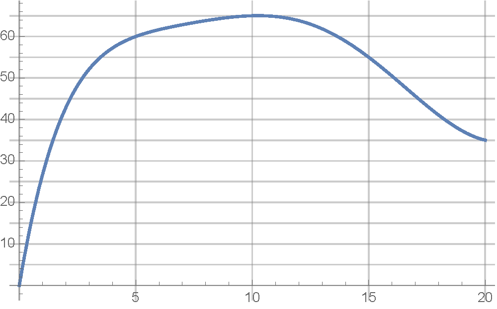

By way of motivation of what will be the definition of the integral, we consider the computational problem of computing the area of a region defined by the graph of a function.
We will estimate the area of this region by approximating the region itself with a collection of blocks of equal width, whose heights are determined by the \(y\)-values of points on the graph of \(f\) through some means. The GeoGebra interactive below helps illustrate the technique. Figure1.2.1.GeoGebra: Estimating area with rectangular blocks 1
Procedure1.2.2.Estimating area.
Let \(f\) be a nonnegative function defined on the interval \([a,b]\text{,}\) and let \(\mathcal{C}\) be the graph of \(f\) from \(x=a\) to \(x=b\text{.}\) To estimate the area between \(\mathcal{C}\) and the \(x\)-axis proceed as follows:
Divide \([a,b]\) into \(n\) equal subintervals, each of width \(\Delta x=(b-a)/n\text{.}\)
For each subinterval pick a sample input \(x^*\) in that interval and build the rectangle whose base is the subinterval and whose sample height is given by \(h=f(x^*)\text{.}\) The area of this block is
Sum together the areas of the \(n\) blocks constructed in Step 2.
Depending on how the sample inputs \(x^*\) are chosen in each subinterval, we get a different estimate. Below you find a number of common methods.
If \(x^*\) is chosen as the left (resp. right) endpoint of each subinterval, the estimate is called a left sum estimate (resp. right sum estimate).
If \(x^*\) is chosen as the midpoint of each subinterval, the estimate is called a midpoint sum estimate.
If \(x^*\) is chosen so that \(f(x^*)\) is the minimum value of \(f\) on each subinterval, the estimate is called a lower sum estimate.
If \(x^*\) is chosen so that \(f(x^*)\) is the maximum value of \(f\) on each subinterval, the estimate is called an upper sum estimate.
Procedure1.2.3.Estimating net change.
Suppose physical quantity \(Q=g(x)\) is a function of an input \(x\text{,}\) and that \(f(x)\) is the instantaneous rate of change of \(Q\) with respect to \(x\text{.}\)
Suppose we are only given the rate of change function \(f\) and wish to use this to estimate the net change of \(Q\) from \(x=a\) to \(x=b\text{:}\) that is, we wish to estimate \(\Delta Q=g(b)-g(a)\text{.}\) We can do so using the same method described in Procedure 1.2.2.
In this context we interpret a sample value \(r^*=f(x^*)\) as a constant rate of change over the given subinterval, in which case an individual term
\begin{equation*}
f(x^*)\, \Delta x=r^* \Delta x
\end{equation*}
in our sum is understood as an estimate of the net change of \(Q\) over the given subinterval, under the simplifying assumption that \(Q\) changes with constant rate of change\(r^*=f(x^*)\) over the interval.
Remark1.2.4.
Recall that given a function \(g\text{,}\) its instantaneous rate of change with respect to \(x\) is precisely its derivative \(g'\text{.}\) This allows us to interpret Procedure 1.2.3 as a method of estimating the net change in a function \(g\) over an interval using information only about its derivative function \(f=g'\text{.}\)
Example1.2.5.
Below you find the graph of the velocity \(v(t)\) (in mph) of a driver heading due east \(t\) minutes after setting off. Compute an estimate of the area under the graph of \(v(t)\) between \(t=0\) and \(t=20\text{,}\) and explain what this estimate means physically speaking. Include units!

Example1.2.6.
Let \(f(x)=1-x^3\text{,}\) and let \(\mathcal{C}\) be the graph of \(f\text{.}\) Compute the upper and lower area estimates of the region between \(\mathcal{C}\) and the \(x\)-axis from \(x=0\) to \(x=1\) by dividing the interval \([0,1]\) into 4 equal subintervals. Draw block pictures of your estimates on the provided graphs. Explain why the lower estimate is equal to the right estimate, and why the the upper estimate is equal to the left estimate.
Let \(f(x)=1-\val{x}^3\text{,}\) and let \(\mathcal{C}\) be the graph of \(f\text{.}\) Compute the upper and lower area estimates of the region between \(\mathcal{C}\) and the \(x\)-axis from \(x=0\) to \(x=1\) by dividing the interval \([-1/2,1]\) into 4 equal subintervals. Draw block pictures of your estimates on the provided graphs.